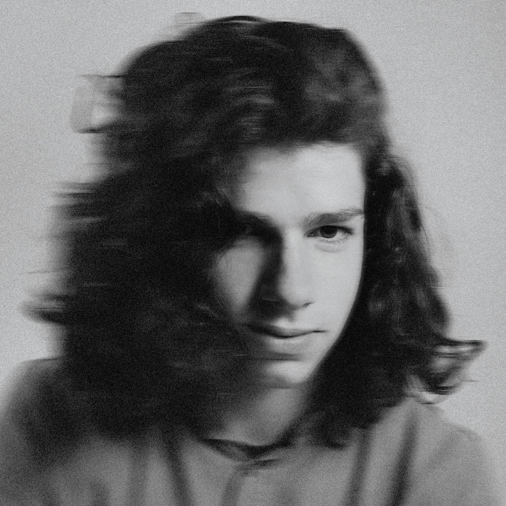

Praktische details
-
DagZaterdag
3 oktober 2026 -
UurDeuren 19u
concert 20u -
Prijs€ 25
per persoon -
LocatieGroen Kwartier
Antwerpen
Over KLAAS
“KLAAS”, dat is Klaas Delrue, de zanger en frontman van Yevgueni. Onder niets meer of minder dan zijn voornaam wil hij in 2026 nog eens solo van zich laten horen.
Het solo-album Tijd voor mij (release 27 maart 2026) is bewust een ‘klein plaatje’ geworden, waarop KLAAS uitdrukkelijk de singer-songwriter en de ‘bedroom-singer’ in zichzelf op de voorgrond wou zetten.
Zowel het album als de optredens zullen eerlijk, ontroerend en recht voor de raap zijn.
KLAAS koos deze keer, in tegenstelling tot zijn vorige solo-avontuur in 2014, voor het Nederlands. Om de eenvoudige reden dat deze plaat zo persoonlijk mogelijk moest worden. Tijd voor mij mag je op die manier opvatten. Maar ook als een zeer schaars goed voor de vader van intussen 9- en 7-jarige dochters.
Live gaat hij helemaal “terug naar de essentie”. Alleen op het podium. Met zijn tien nieuwe liedjes die niet meer dan een stem, een gitaar en wat versieringen behoeven. Met de verhalen erachter. Met hommages aan zijn helden. En ongetwijfeld een paar solo-versies van Yevgueni-pareltjes.
Wie het ooit gezien of gehoord heeft, weet dat het werkt. En dat het bijzonder zal zijn.
Deze sessie is voorbij
Bedankt aan iedereen die erbij was. Benieuwd wat er nog komt?